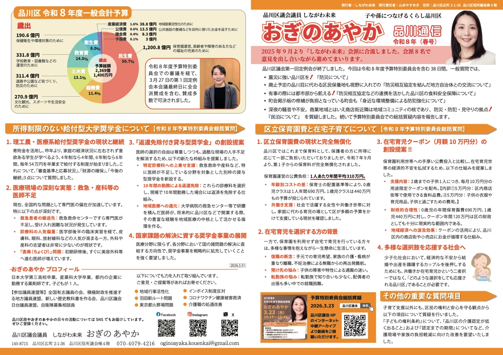

2025.05
福島県矢祭町との
防災相互協定が締結。
提案してきた矢祭町との防災相互協定が締結されました。普段の交流を、いざというときの支え合いへ。
地方とつながる ↗おぎの あやか
AYAKA OGINO薬剤師として。子育てをする一人として。
暮らしに身近な課題に向き合います。
こんにちは。品川区議会議員のおぎのあやかです。
活動の基本は、現場に足を運び、皆さまのお話を直接伺うこと。区内の施設や商店街、ご相談をいただいた場所へ、徒歩や自転車で出かけています。
子育てや介護、住まい、買い物、学校教育。日々の暮らしの声を受け止め、子どもや孫の世代へ、よりよい品川をつないでまいります。
街で見かけたら、どうぞ気軽にお声かけください。
日本大学第三高等学校卒業。星薬科大学卒業。薬剤師として品川区内の薬局等への勤務を経て、現在は都内の会社で薬事業務に従事。子ども1人。
積極財政を推進する地方議員連盟／自衛官募集相談員／北朝鮮拉致被害者を救う会／新しい歴史教科書を作る会／品川防災士会／品川区議会日台議員連盟／全国有志議員の会／なおひごはんの会（戸越八幡神社はたけ部）／大井倉田町会
2025.05
提案してきた矢祭町との防災相互協定が締結されました。普段の交流を、いざというときの支え合いへ。
地方とつながる ↗教育の取り組み
経歴だけでなく、教育への考え方や思いを知るため、着任前の意見交換の機会を提案し、採用されました。
歴史とつながる ↗2026.03
2歳までの子ども1人につき、月額10万円分の用途限定クーポンを提案。実施が決まった制度ではありません。
区政報告を読む ↗掲載内容は区政報告および活動資料に基づいています。各制度の利用条件等は区の案内をご確認ください。

PDF ↗SHINAGAWA NEWSLETTER / 2026.03
在宅育児への支援提案、大学奨学金、令和8年度予算についてご報告します。
FOLLOW & CONNECT

子育て、介護、地域のこと。
日々の「困った」も、品川への思いも。
皆さまの声を、区政につなげます。
oginoayaka.kouenkai@gmail.com